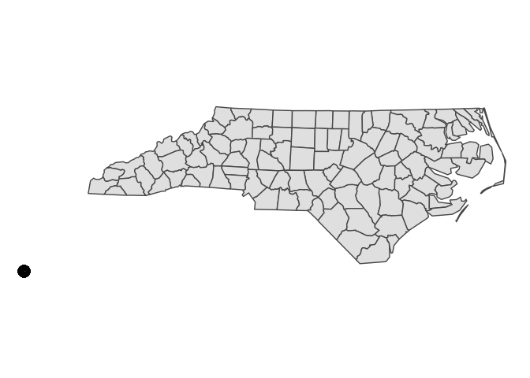
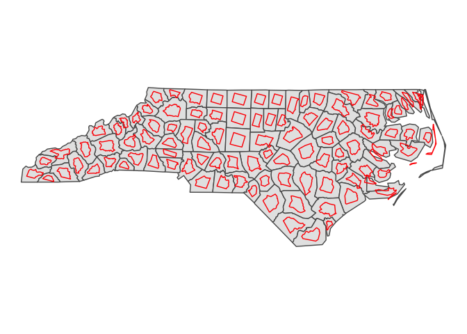
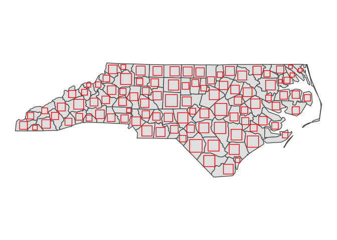
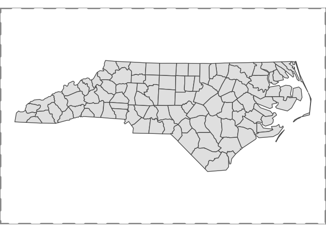
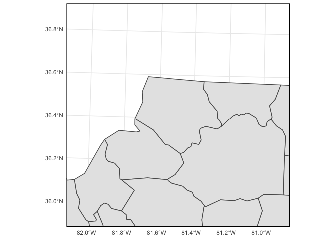

The goal of overedge is to provide useful functions for making maps with R. This is a collection of miscellaneous functions primarily for working with ggplot2 and sf.
Installation
You can install the development version of overedge like so:
remotes::install_github("elipousson/overedge")Examples
overedge currently provides a variety of functions for accessing spatial data, modifying simple feature or bounding box objects, and creating or formatting maps with ggplot2.
Make icon maps with sf objects and ggplot2
geom_sf_icon wraps ggsvg::geom_point_svg() to provide an convenient way to make icon maps.
You can create maps using a single named icon that matches one of the icons in map_icons.
library(overedge)
library(ggplot2)
library(sf)
#> Linking to GEOS 3.9.1, GDAL 3.4.0, PROJ 8.1.1; sf_use_s2() is TRUE
nc <- st_read(system.file("shape/nc.shp", package = "sf"))
#> Reading layer `nc' from data source
#> `/Library/Frameworks/R.framework/Versions/4.1/Resources/library/sf/shape/nc.shp'
#> using driver `ESRI Shapefile'
#> Simple feature collection with 100 features and 14 fields
#> Geometry type: MULTIPOLYGON
#> Dimension: XY
#> Bounding box: xmin: -84.32385 ymin: 33.88199 xmax: -75.45698 ymax: 36.58965
#> Geodetic CRS: NAD27
nc <- st_transform(nc, 3857)
theme_set(theme_void())
nc_map <-
ggplot() +
geom_sf(data = nc)
nc_map +
geom_sf_icon(data = nc, icon = "point-start", size = 8)You can also use an icon column from the provided sf object.
nc$icon <- rep(c("1", "2", "3", "4"), nrow(nc) / 4)
nc_map +
geom_sf_icon(data = nc, size = 5)
Check map_icons to see all supported icon names.
head(map_icons)
#> name
#> 1 aerialway
#> 2 airfield
#> 3 airport
#> 4 alcohol-shop
#> 5 american-football
#> 6 amusement-park
#> url
#> 1 https://raw.githubusercontent.com/mapbox/maki/main/icons/aerialway.svg
#> 2 https://raw.githubusercontent.com/mapbox/maki/main/icons/airfield.svg
#> 3 https://raw.githubusercontent.com/mapbox/maki/main/icons/airport.svg
#> 4 https://raw.githubusercontent.com/mapbox/maki/main/icons/alcohol-shop.svg
#> 5 https://raw.githubusercontent.com/mapbox/maki/main/icons/american-football.svg
#> 6 https://raw.githubusercontent.com/mapbox/maki/main/icons/amusement-park.svg
#> size style repo
#> 1 15 mapbox/maki
#> 2 15 mapbox/maki
#> 3 15 mapbox/maki
#> 4 15 mapbox/maki
#> 5 15 mapbox/maki
#> 6 15 mapbox/makiScale and rotate sf objects
st_scale_rotate() is a convenience function for apply affine transformations to sf objects.
nc_rotated <- st_scale_rotate(nc, scale = 0.5, rotate = 15)
nc_map +
geom_sf(data = nc_rotated, fill = NA, color = "red")
Create inscribed squares in sf objects
nc_squares <- st_inscribed_square(nc)
nc_map +
geom_sf(data = nc_squares, fill = NA, color = "red")
Add a neatline to a map
layer_neatline() hides major grid lines and axis label by default. The function is useful to draw a neatline around a map at a set aspect ratio.
nc_map +
layer_neatline(
data = nc,
asp = "6:4",
color = "gray60", size = 2, linetype = "dashed"
)
layer_neatline() can also be used to focus on a specific area of a map with the option to apply a buffer as a distance or ratio of the diagonal distance for the input data. The label_axes and hide_grid paramters will not override a set ggplot theme.
theme_set(theme_minimal())
nc_map +
layer_neatline(
data = nc[1, ],
diag_ratio = 0.5,
asp = 1,
color = "black",
label_axes = "--EN",
hide_grid = FALSE
)